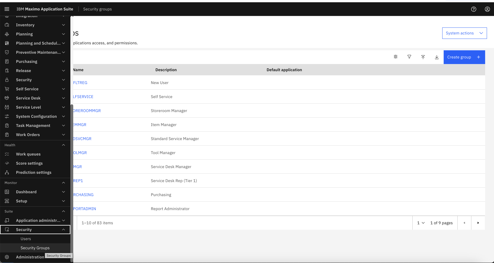
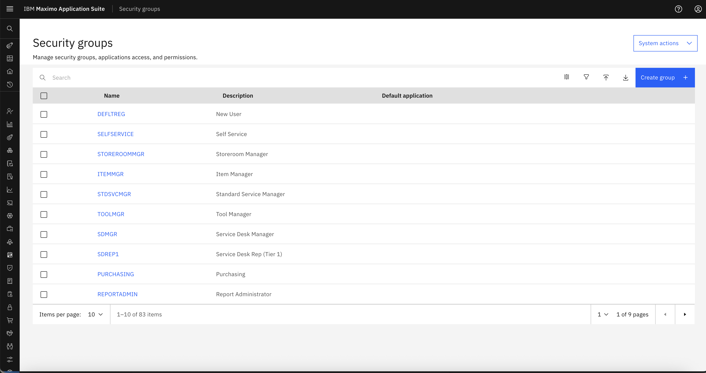
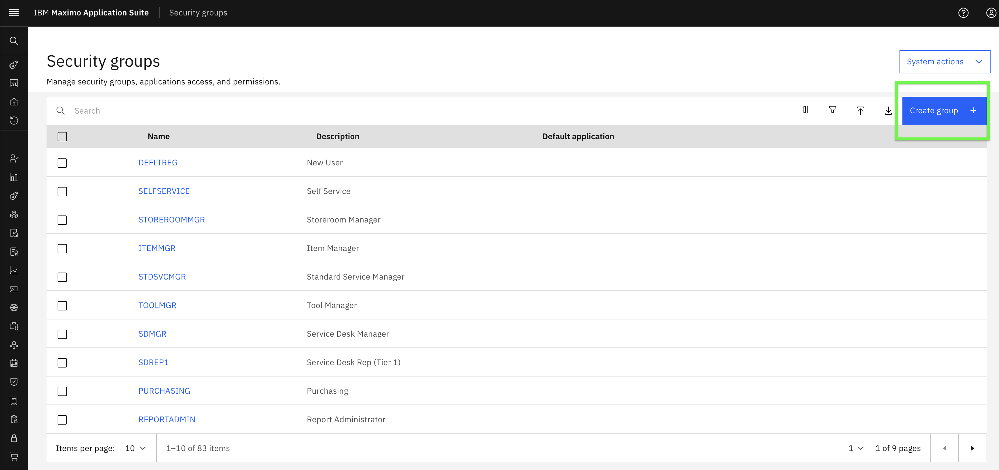
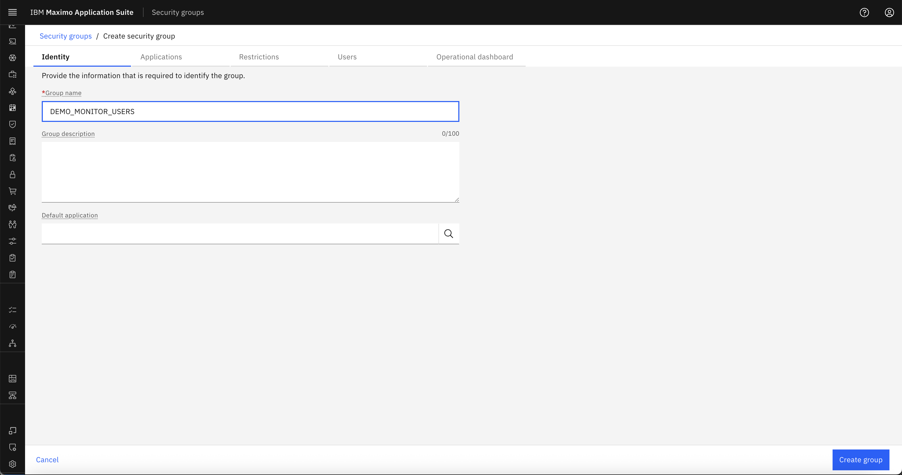
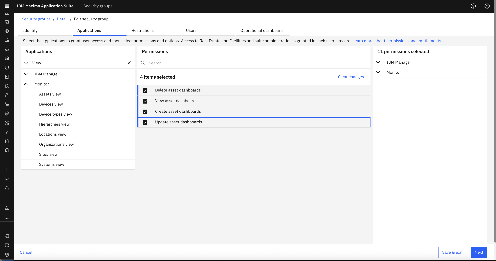
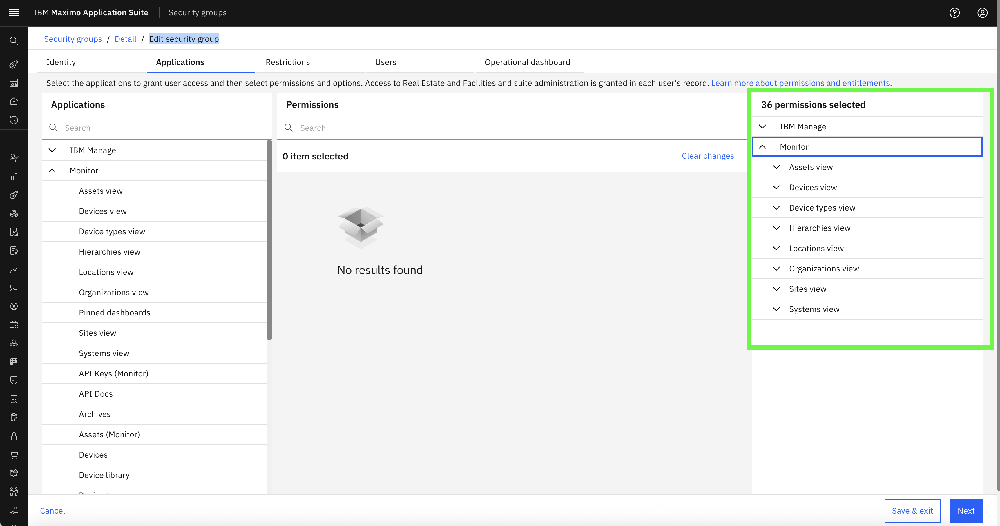

Objectives
In this exercise, you will learn how to:
- Create new Security Groups in Monitor
- Define role-based permissions for users
Before you begin:
This exercise assumes that you have:
- Admin access to Maximo Monitor
- Completed the RBAC Overview in the Introduction section
Security Groups in Monitor define which pages and functionalities users can access. By creating Security Groups, you can enforce role-based permissions like admin, viewer, or limited dashboard access.
Step 1: Navigate to Security Groups
- Login to Monitor with an Admin user
- Go to Suite → Security → Security Groups
 
Step 2: Create a New Security Group
-
Click Create group 
-
Enter a name for the group, e.g.,
DEMO_MONITOR_USERSand Click Create group  -
Provide a brief Group description (optional)
Step 3: Assign Permissions
- Select the features/modules that this group should have access to
Example:
– Enable Dashboard access
– Enable CRUD operations on Dashboard
– Disable Setup page access -
Save the group once permissions are configured
-
Search for View and All the View Pages Shall Appear. Select all the permissions to enable the Security Group to view and Access Only Dashboard Pages.

- The Assigned permissions can be viewed in Details / Edit Security group section

Example of Out of the Box Security Groups
MONITOR_ADMIN, MONITOR_USERS & MONITOR_READ_ONLY are out-of-box security groups and customers can change them and also able to create new security groups for their needs.
| Group Name | Purpose | Access Scope |
|---|---|---|
| MONITOR_ADMIN | Full Admin Access | All pages (Dashboard + Setup) |
| MONITOR_USERS | Standard User | Dashboard only (CRUD allowed) |
| MONITOR_READ_ONLY | Readonly Role | Dashboard view only (no CRUD) |
Congratulations!
You have successfully created a Security Group. Next, you can proceed to Create Users and Assign Groups